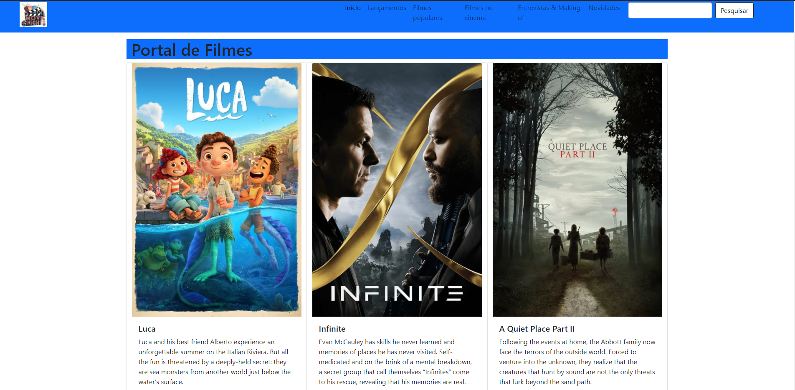
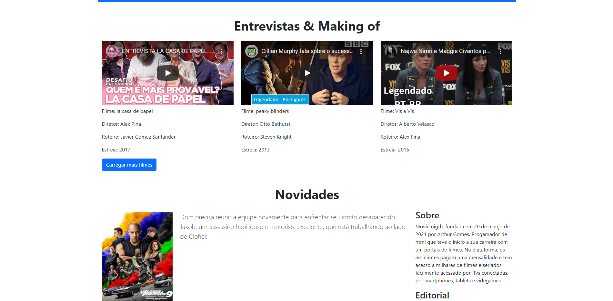
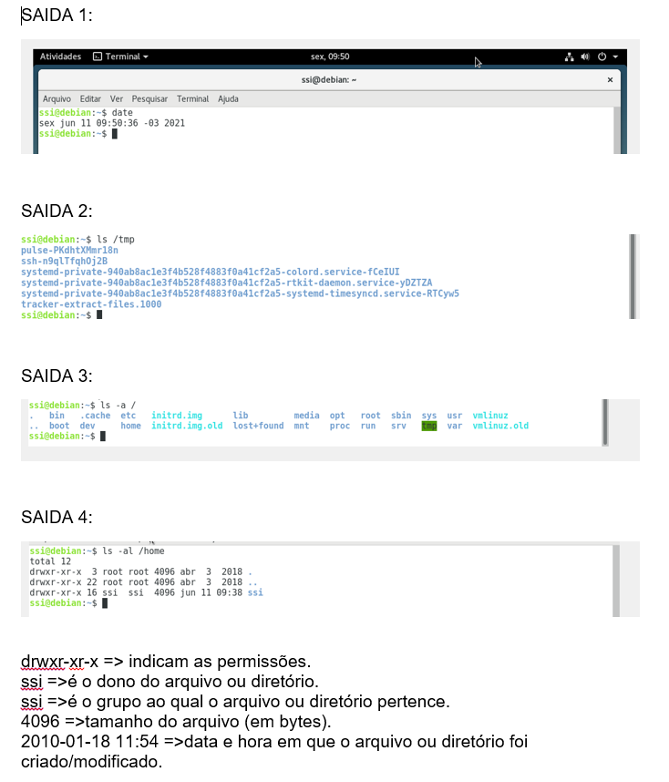

.
LIP - Jogos scratch
Scratch oque é?
O que é o Scratch? Com o Scratch, é possível criar animações, jogos e histórias interativas, expressando paixões e interesses pessoais por meio da programação em blocos. Você pode acessar o Scratch de forma online – tendo acesso a sua comunidade – ou de forma offline, fazendo seu download para o computador ou tablet.
//Para saber mais assista o vídeo abaixo//
Jogo Pong
Jogo pong você tem que acertar a bola e não deixar ela bater na parede, o jogador que fizer mais pontos vence!
:)
Controles:
W /S
↑ /↓
Para abrir o jogo em uma nova pagina:
CLIQUE AQUIQuiz prêmio Turing e Nobel
Como Jogar:
O nosso Quiz consiste em fazer perguntas relacionadas a premiados do nobel prise e do prêmio turing.
Terá aproximadamente 20 perguntas.
Cada pergunta tera 4 alternativas Letra: A B C D e apenas uma delas é a resposta correta.
Se você quiser escolher a resposta A basta clicar na tecla A, escolheu a resposta B clicar na tecla B, assim a diante com as outras alternativas C e D.
:)
Para abrir o jogo em uma nova pagina:
CLIQUE AQUIAED - ALGORITMOS E ESTRUTURAS DE DADOS I
Codigo torre de hanoi:
.png)
Codigo funcionando...
.png)
Para acessar o projeto no github:
https://github.com/Arthurosg/explicacao.gitDIW - Desenvolvimento de Interfaces Web
Nessa materia desenvolvi um portal de filmes.
Mais algumas imagens do portal de filmes.
IC - Introdução à Computação
Nessa materia desenvolvi uma maquina virtual, utilizando sistema operacional linux
